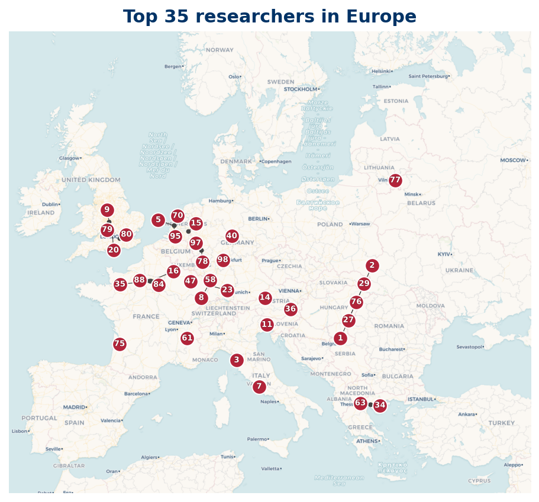

42 researchers are based in Europe; 35 researchers mapped, 7 researchers location not available (institution geocode pending).
Listing
| Rank | Name | Institution | Country |
|---|---|---|---|
| 1 | István Gaál | University of Debrecen | HU |
| 2 | J. C. Rosales | University of Granada | ES |
| 4 | Yann Bugeaud | Centre National de la Recherche Scientifique | FR |
| 7 | Kálmán Győry | University of Debrecen | HU |
| 10 | Jörg Brüdern | University of Göttingen | DE |
| 11 | Jan-Hendrik Evertse | Leiden University | NL |
| 13 | László Remete | University of Debrecen | HU |
| 15 | Tobias Hilgart | University of Salzburg | AT |
| 17 | Volker Ziegler | University of Salzburg | AT |
| 18 | Umberto Zannier | Scuola Normale Superiore | IT |
| 19 | Ariyan Javanpeykar | Johannes Gutenberg University Mainz | DE |
| 22 | Pietro Corvaja | University of Udine | IT |
| 29 | Clemens Fuchs | University of Salzburg | AT |
| 30 | Hartmut Monien | Center for Theoretical Physics | PL |
| 31 | Amos Turchet | Roma Tre University | IT |
| 33 | Glyn Harman | Royal Holloway University of London | GB |
| 34 | Raimundas Vidunas | Vilnius University | LT |
| 38 | S. I. Dimitrov | Sofia University "St. Kliment Ohridski" | BG |
| 42 | Michel Waldschmidt | Sorbonne Université | FR |
| 45 | Irene I. Bouw | Helmholtz-Institute Ulm | DE |
| 46 | Ozlem Ejder | Koç University | TR |
| 49 | Yang-Hui He | London Institute for Mathematical Sciences | GB |
| 50 | J. M. Urbano-Blanco | University of Granada | ES |
| 53 | Oleg N. German | Lomonosov Moscow State University | RU |
| 54 | Andrew R. Booker | University of Bristol | GB |
| 56 | Dominik Barth | University of Würzburg | DE |
| 59 | Andreas Wenz | University of Würzburg | DE |
| 63 | David Berghaus | Fraunhofer Institute for Intelligent Analysis and Information Systems | DE |
| 66 | Danylo Radchenko | Université de Lille | FR |
| 68 | Samir Siksek | University of Warwick | GB |
| 73 | È. I. Kovalevskaya | - | BY |
| 74 | Constantin M. Petridi | National and Kapodistrian University of Athens | GR |
| 76 | A. Pethö | University of Debrecen | HU |
| 80 | P. A. García-Sánchez | University of Granada | ES |
| 82 | Ruiwen Dong | University of Oxford | GB |
| 85 | Karsten Müller | - | DE |
| 87 | Boris Adamczewski | Centre National de la Recherche Scientifique | FR |
| 89 | Saša Novaković | Heinrich Heine University Düsseldorf | DE |
| 97 | Maurice Mignotte | Université de Strasbourg | FR |
| 98 | Frédéric Campana | University of Lorraine | FR |
| 99 | Nikolai G. Moshchevitin | Lomonosov Moscow State University | RU |
| 100 | Michael Taktikos | - | DE |